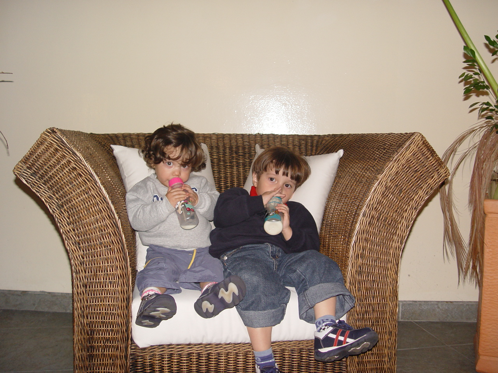
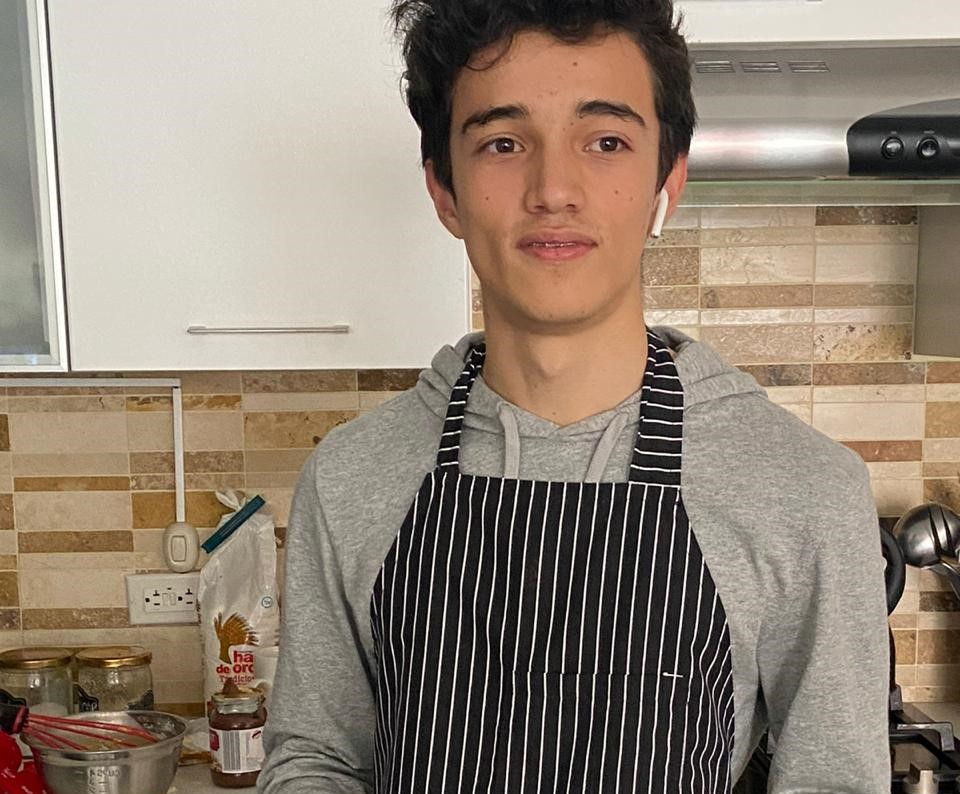

Bueno como decía soy sebastian Piñeros, y desde muy pequeño he sentido bastante interés en entender como es que funcionan las cosas, llegando a ser bastante curioso y causándome heridas por desconocimiento. Durante la primaria me regalaron mi primera consola y mi primer computador y me acuerdo de pasar mucho tiempo viendo todas las posibilidades que tenían estos aparatos.
Durante el bachillerato descubrí muchas cosas que me gusta hacer hoy en día, pero igual siempre me sentía a gusto cuando trabajaba con computadores o con diferentes artefactos, siendo un fator importante de distracción durante mi época de estudios, y desde entonces fue que decidí centrarme en esto que tanto me gusta que es entender y tener la capacidad de crear y desarrollar en entornos digitales.
Este gusto por la tecnología me ha llevado a la Universidad de La Sabana para estudiar ingeniería informática y buscando especializarme en el desarrollo web y en la programación de nuevas aplicaciones que ayuden a la población en general. También intentando enlazar a muchas otras cosas que me gustan como lo es la música y utilizar todos esos conocimientos para generar un mejor desempeño en los desarrollos.